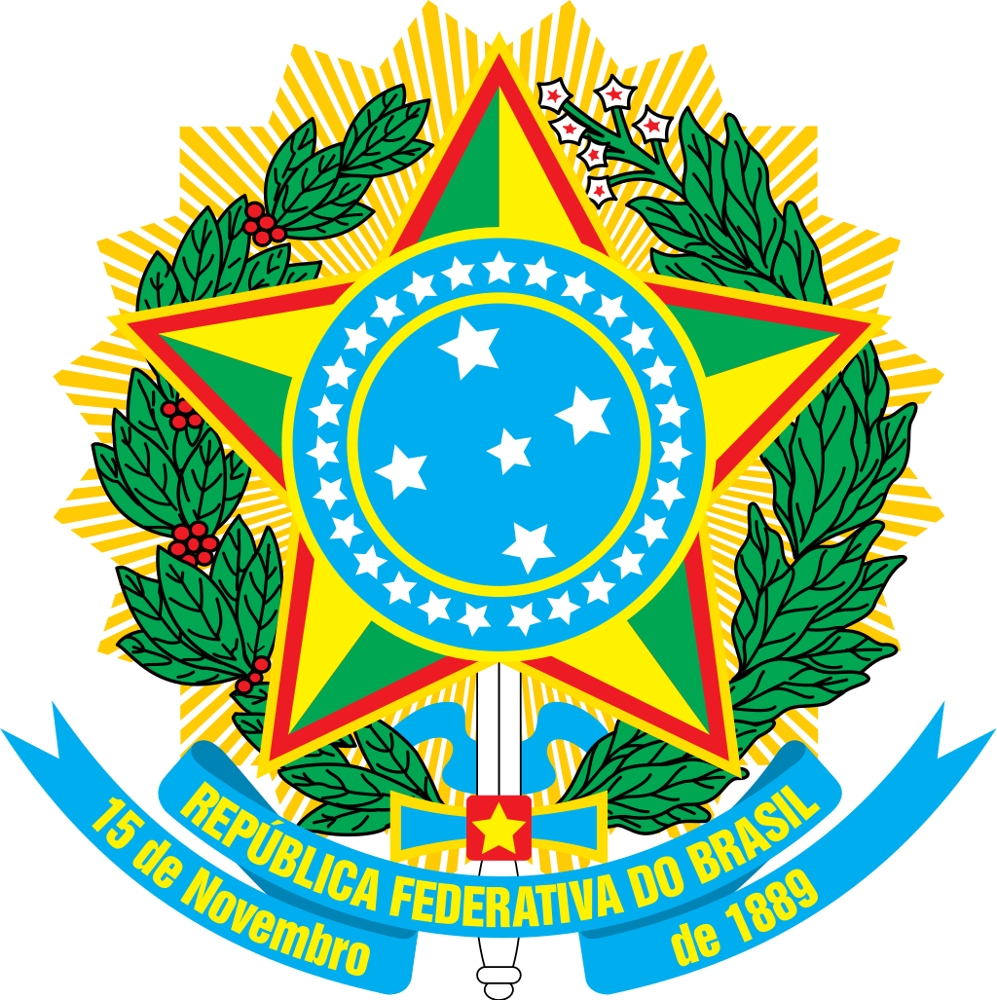
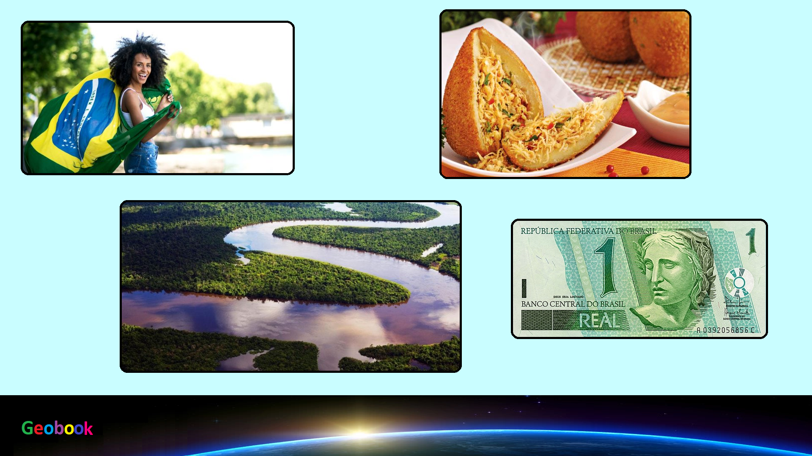

____
Флаг
Флаг Бразилии представляет собой прямоугольное зелёное полотнище с жёлтым горизонтальным ромбом в центре. Внутри ромба находится тёмно-синий круг с двадцатью семью белыми пятиконечными звёздами пяти размеров, сгруппированных в девять созвездий. Круг пересечён изогнутой вверх в виде арки белой лентой с национальным девизом Бразилии, написанным зелёными буквами. Национальный флаг был принят 19 ноября 1889 года декретом № 4, частично изменён 28 мая 1968 года законом № 5443 и 11 мая 1992 года законом № 8421. Действующий закон № 5700 о национальных символах был принят 1 сентября 1971 года.

Герб
Герб Бразилии был утверждён 15 ноября 1889 года, через 4 дня после того, как Бразилия стала республикой. Герб состоит из центральной эмблемы, обрамлённой ветвями кофейного дерева с левой стороны и табака с правой, это важные сельскохозяйственные культуры Бразилии. В голубом круге в центре изображено созвездие Южный крест. 27 звёзд возле него означают 26 штатов Бразилии и Федеральный округ. Голубая лента содержит полное официальное название государства (República Federativa do Brasil — Федеративная Республика Бразилия) в первом ряду. Во втором указана дата основания федеративной республики (15 ноября 1889 года).

____
